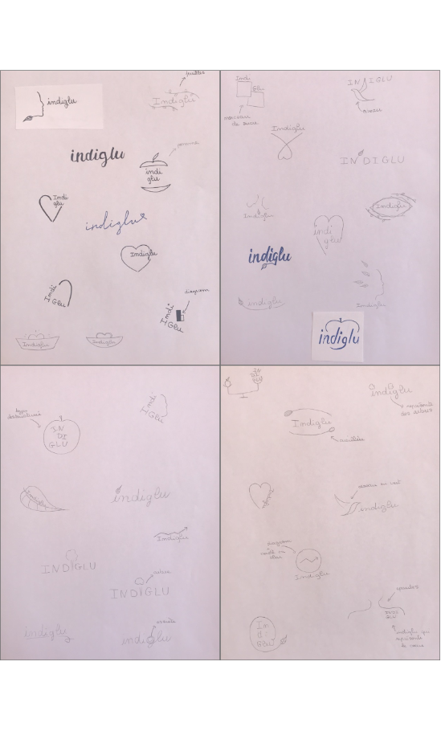
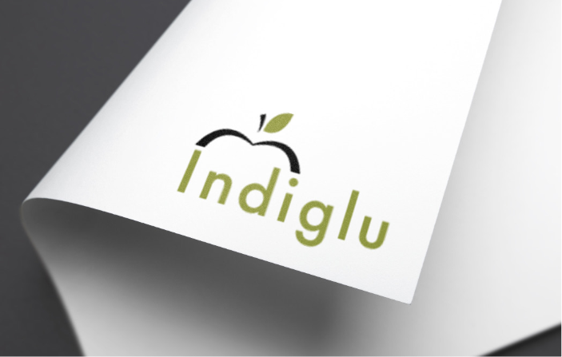
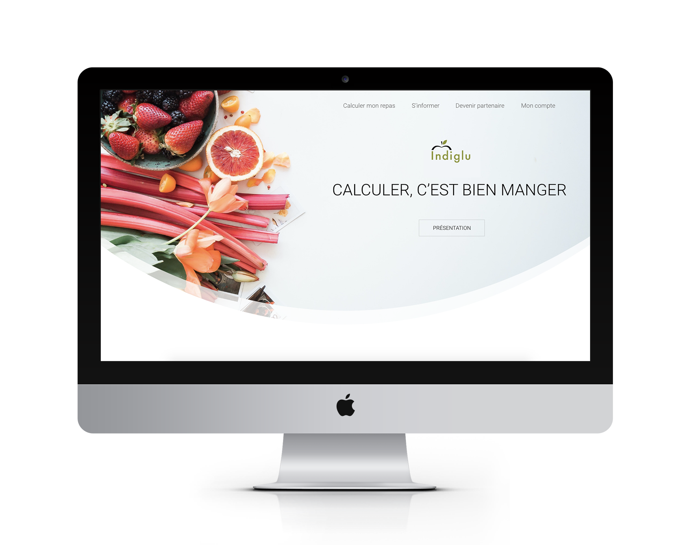

Indiglu est un site d’alimentation saine, favorisant le bien-être et propose une alimentation adaptée pour les diabétiques. Les fonctionnalités sont nombreuses et permettent à chaque individu de manger sainement et de rester en bonne santé.
Date : 2020
Réalisation : DUT MMI
Type : Projet indivuel
La première étape du projet est sur papier. Nous devions imaginer plusieurs logos. Ceux-ci devaient faire référence à une alimentation saine où le bien-être. Le but était d’en garder quelques'un afin de les vectoriser.
Le logo final est simple : composé du texte «indiglu» et d’une forme de pomme au-dessus. La typographie est Futura. Le vert rappel la couleur de la pomme mais aussi la nature. Pour ce qui est du choix de la forme, j’ai choisi de créer seulement le haut d’une pomme qui englobe le texte.
L’étape suivante est la création d’une maquette de la page d’accueil sur le logiciel Adobe XD. Nous devions garder les contenus, mais changer l’identité visuelle et le slogan. Le nouveau logo était à intégrer dans la maquette.
